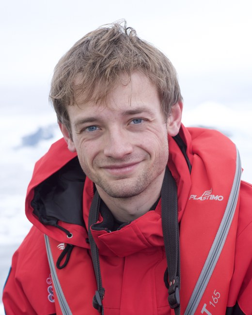
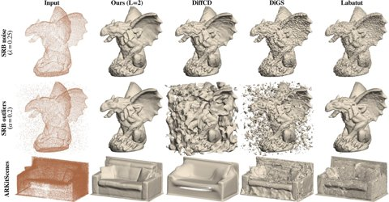

Gabriel Lenain
PhD Student | ENS Paris | Inria WILLOW

I am a first-year PhD student at ENS Paris, in the Inria WILLOW team, advised by Jean Ponce and Edmond Boyer. My research interests lie at the intersection of computer vision, geometry, and machine learning, with a focus on 3D reconstruction and neural implicit representations.
I recently earned my engineering degree from École Polytechnique (X2022), specializing in applied mathematics, alongside a Master's degree in Artificial Intelligence, Systems, and Data (IASD) at ENS–PSL. More information is available in my CV.
Feel free to reach out at gabriel.lenain@inria.fr.
news
| Oct 2026 | Preprint Surface Reconstruction from Range Scans under Visibility Constraints is out on arXiv. |
|---|---|
| Oct 2026 | Started my PhD at ENS Paris & Inria WILLOW, advised by Jean Ponce and Edmond Boyer. |
| Apr 2026 | Started a research internship at Inria WILLOW. |
publications
2026
-
arXiv

Surface Reconstruction from Range Scans under Visibility ConstraintsarXiv preprint arXiv:2610.18005, 2026 · under reviewA range scan records more than where a surface is: every measured ray also states where the surface is not. Most implicit reconstruction methods discard this, treating the scan as an unordered point cloud. We instead take the sensor origin of every point as input and fit a continuous 1-Lipschitz implicit field directly to the rays, supervising the first intersection found by differentiable sphere tracing rather than an unsigned distance to the points. Starting from a closed-form field enclosing the scene, depth supervision carves the surface inward toward the observations. The Lipschitz constraint turns visibility into a geometric certificate: positive field values along a measured ray guarantee a ball of empty space around it, so one-dimensional ray evidence becomes a three-dimensional free-space guarantee. The result is robust to acquisition noise, outliers and sparse sampling, and avoids hallucinating surfaces in regions the sensor has observed to be empty.
@article{lenain2026visibility, title = {Surface Reconstruction from Range Scans Under Visibility Constraints}, author = {Lenain, Gabriel and Boyer, Edmond and Ponce, Jean}, journal = {arXiv preprint arXiv:2610.18005}, year = {2026} }
cv
Education
| Oct 2026 – now | PhD in Computer Vision ENS Paris & Inria WILLOW, advised by Jean Ponce and Edmond Boyer |
|---|---|
| 2025 – 2026 | M2 IASD (Artificial Intelligence, Systems, Data) PSL University (ENS Paris, Université Paris Dauphine, Mines Paris) |
| 2022 – 2025 | BSc & MSc, Engineering Cycle (Ingénieur Polytechnicien) École Polytechnique (X22) |
Experience
| Apr – Jul 2025 | Research intern, Machine Learning for Particle Physics University of Tokyo & CNRS |
|---|
The best way to reach me is by email.